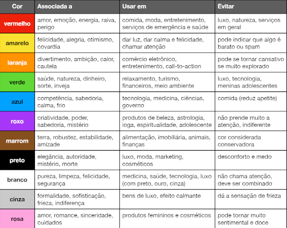
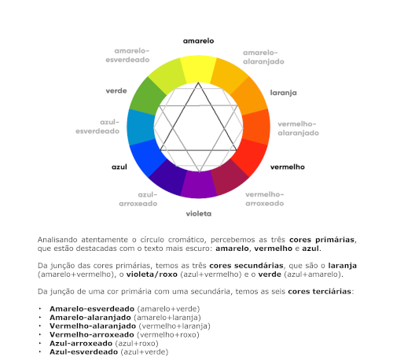
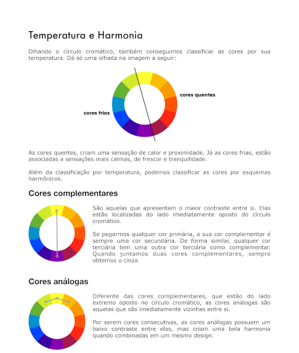
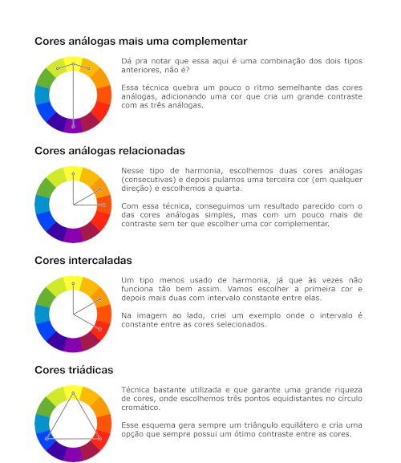
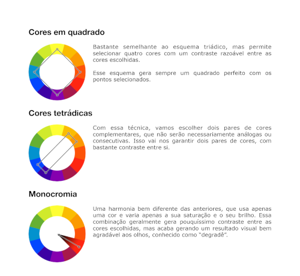
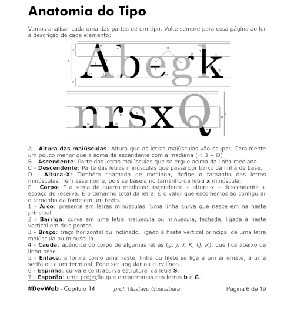
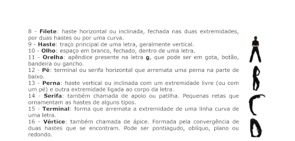

as cores são muito importantes para tudo, não só para sites, cada tipo de site combina com algum tipo de cor
vamos aprender que cor combina com cada site
a cor que as impressas mais usam é o azul, por ser a cor menos rejeitada do mundo e ter relação com competência, calma e sabedoria, mas você pode inovar se quiser, você que sabe
para mudar o tom de uma cor de CSS3 no Visual Studio, você pode usar códigos ou mudar colocando o mouse nas letras da cor
os tipos de código que você pode usar são códigos Hexadecimais(números decimais e Hexadecimais), código RGB, e HSL
os 3 tipos dão o mesmo resultado, mas o que eu acho mais fácil é o RGB
toda cor que você vê em seu computador são uma junção de vermelho, verde, e azul, cada uma com um valor diferente de cada uma dessas três cores
com o RGB, você coloca o valor do vermelho, verde, e azul, nessa ordem, e eles vão de 0 até 255
o código do azul mais forte por exemplo é RGB(0, 0, 255), ou seja, nada de vermelho, nada de verde, e azul no máximo, espero que tenha ficado claro
mas você não precisa quebrar muito a cabeça com isso, é só pra entender mesmo, você pode escolher o tom da cor deixando o mouse em cima dela no Visual Studio, daí aparece uma paletinha pra você mudar o tom da cor e o próprio Visual Studio vai calcular o código preciso
você pode até mudar a transparência com essa paleta, a primeira barra serve pra isso, e na segunda você pode escolher ainda melhor a cor que você quer
escolher uma paleta de cores é praticamente uma ciência, não é só pensar em uma combinação de cores aleatóriamente e pronto, precisa escolher uma cor principal e uma técnica boa
bom, uma paleta de cores geralmente tem de 3 a 5 cores, sendo 4 um número perfeito, lembrando que preto e branco não fazem parte da paleta, eles sempre vão fazer parte do seu site. Nunca use uma paleta com menos de 3 cores ou uma com mais de 5
para escolher essas cores, você precisa usar alguma técnica, vamos ver as 9 técnicas mais comuns
  
o adobe colors é o melhor pra isso, mas existem também o paletton e o coolers, aqui embaixo está o vídeo do guanabara mexendo no adobe colors:
guanabara explicando adobe colors
existe uma extenção do google para isso, ela ja está instalada, no chrome no canto direito superior está um conta gotas, essa é a extenção, use ela quando quiser capturar uma cor da tela
se quiser fazer um efeito degradê, você precisa usar background-image: linear-gradient()
nos parentêses, primeiro você coloca pra qual direção vai ser o degrade, existem duas formas, indicando por letras, ou seja, to right; to left ; to top; e to bottom, mas tem uma outra maneira melhor que essa, que é a por grau(também é a que o guanabara prefere)
para indicar a direção por grau, faça o seguinte: imagine que o meio da tela tem um círculo, e como você sabe todo circúlo tem 360 graus, agora divida esse círculo em quatro com linhas imaginárias, cada pedaço é 90 graus do círculo, então a linha imaginária que aponta pra direita é 90 graus, a que aponta pra baixo é 180, a que aponta pra esquerda é 270 e a que aponta pra cima é 360 ou 0, é meio difícil de explicar isso por palavras, mas espero que tenha entendido o que quis dizer
agora pra dizer a direção do degradê você escreve o grau e ao lado deg, exemplo: 90deg(no caso seria um degradê pra direita)
se for pra cima ou pra baixo, vai ficar tudo listrado, pra corrigir isso você coloca no style: * {height: 100%;}, e assim que se muda as configurações globais
bom, primeiro você coloca a direção nos parentêses, e depois você coloca uma vírgula e usa as cores, dividindo cada com com uma vírgula, coloque as cores na ordem que você quer, por exemplo, se você quiser que seja um degradê da direita pra esquerda, indo de azul até verde, primeiro você coloca o azul depois o verde
e outra coisa, pra deixar o fundo fixo, coloque outro parâmetro no estilo local: background-attachment: fixed, fica bem melhor assim
se quiser que determinada cor cubra uma certa quantidade da caixa, use uma porcentagem depois dessa cor. Por exemplo, se tiver um degradê de vermelho e laranja, e você quer que o vermelho cubra mais a caixa que o laranja, você escolhe uma porcentagem, como 20%, assim ele vai cubrir 20% da caixa e aí sim começaria o degradê
se você quiser fazer um degradê de uma cor para transparente, ou vice-versa, você pode usar a palavra transparent para indicar uma cor transparente. Por exemplo, digamos que você queira fazer um degradê para direita da cor vermelho até transparente em um h1, então você usaria essas configurações para o h1: background-image: linear-gradient(90deg, red, transparent)
isso não é recomendado, mas se quiser você invés de usar linear-gradient, você usa radial-gradient, e invés de colocar a direção ou os graus dela você coloca circle
as fontas são tão importantes como as cores, elas também passam emoções, a combinação de imagens bonitas, cores bonitas e fontes que combinam com o conteúdo que fazem seu site agradar alguém visualmente ou não
anatomia são as partes de alguma coisa, nesse caso são as partes das fontes, isso é super importante para você entender fontes
aqui embaixo está um pequeno gráfico sobre a anatomia da Tipografia(do guanabara):
 glifos são letras, caso não tenha entendido
outro detalhe é a família tipográfica, um mesmo glifo pode ter várias versões em uma mesma fonte
isso o guanabara não explica no reservatório, mas é bem importante, aqui em baixo uma lista de definição para você entender melhor:
sobre as categorias de fontes, vamos ver mais uma dl
chegou a hora de mudar a fonte na prática
para isso, você vai usar a função de CSS font-family:
com essa função você pode escolher a fonte de algo, você pode informar simplesmente a fonte que você quer, mas isso não é recomendado, porque alguns dispositivos são compátiveis com certas fontes e incompátiveis com outras
para resolver isso, você precisa dar mais alternativas, ou seja, você colocar mais de uma fonte, caso a primeira não dar certo ele vai tentar a segunda, se não der, vai tentar a terceira, e por aí vai
o ideal é que a última alternativa sempre seja uma fonte genérica
fontes genéricas na verdade não são fontes em si, são uma categoria de fontes, se por exemplo você quer uma fonte sem serifa, você escolhe as fontes que você prefere que sejam sem serifa, mas como última alternativa você escolhe sans-serif(sem serifa), daí se todas as fontes derem errado ele vai como última opção escolher uma fonte qualquer que não tenha serifa e seja compátivel
se você quiser, você pode ver algumas fontes boas e mais usadas em Web Safe Fonts
isso se chama safe combinations, sempre use esse método
IMPORTANTE LEMBRAR, quando for uma fonte de duas palavras você precisa colocar entre parentêses, é assim que funciona o CSS
para mudar o tamanho da fonte no CSS você precisa usar o font-size
existem várias medidas de tamanho de fonte, elas se dividem em dois tipos, Medidas Absolutas e Medidas Relativas
as Medidas Absolutas são aquelas qu tem sempre o mesmo valor e não tem relação com alguma outra medida
já as Medidas Relativas são medidas que seu valor tem relação com outra medida, e esse valor pode variar
como eu já disse, existem MUITAS medidas, mas vamos usar apenas duas, que são o px(medida absoluta), e o em(medida relativa), nunca use alguma outra medida, essas duas são as mais recomendadas
Nunca de espaço entre por exemplo 1 e em, você tem que escrever os dois lado a lado, ficando 1em, e sempre use ponto pra números quebrados, a vírgula é desconsiderada em números reais
vamos usar principalmente o em, o em sempre tem o mesmo valor que a medida padrão da fonte, que geralmente é 16px
lembrando que o tamanho padrão da fonte é o tamanho da fonte dos paragráfos, não dos títulos por exemplo, então se você usar font-size: 1em em um h1, ele vai ficar com a fonte do mesmo tamanho de um paragráfo normal
digamos que o tamanho padrão da fonte seja 16px(como a maioria dos casos), então 1em vale 16px, na mesma lógica 1.5em vale 24px, porque é um em e maior, ou seja, 16px e mais metade disso, 2em vale 32px, e assim vai
mas agora falando do px, digamos de novo que o tamanho padrão da fonte seja 16px, então se você dar a um paragráfo um font-size de 16px, ele vai ficar igual, mas se você dar 18px, ele vai aumentar um pouco e ficar um pouco maior do que o normal, se você dar 14px, ele vai diminuir e vai ficar um pouco menor do que o normal, isso porque nesse caso o padrão é 16px
lembra quando falamos de família tipográfica? cada glifo da família tipografica tem um peso diferente, ou seja, o peso indica se a letra é mais magrinha ou mais gordinha e chamativa
e estilo seria basicamente um estilo mesmo, um exemplo de estilo é o italico
para indicar o peso de uma fonte, você usa o font-weight, e lembrando os parâmetros weight, width,e height são coisas totalmente diferentes, weight é peso, width é largura, e height é altura
para usar o font-weight, você pode ou usar palavras-chave, ou usar um número de 100 até 900, pulando de 100 em 100
é melhor na maioria dos casos usar por palavras-chave, que são lighter, normal, bold, bolder
mas lembrando que nem toda fonte tem todas essas variações, a maioria só tem o normal e o bold
mas como já disse, você também pode indicar por um número entre 100 e 900, pulando de 100 em 100, você não pode por exemplo usar 150, só pode pular de 100 em 100, ou seja, pode usar 100, 200, 300, e assim vai até 900
quanto menor o número, mais leve fica, e quanto maior o número, mais pesado, mas isso pode não dar muito certo dependendo da fonte, porque a maioria das fontes não tem tantas variações assim, então fica mais simples se você indicar por palavras-chave
tem também o text-decoration, mas esse não é tão importante e provavelmente você vai usar bem pouco, ele serve pra decorar o texto, você pode sublinhar palavras por exemplo
agora que você já sabe famílias, tamanhos, peso, e estilo de fontes, invés de indicar um de cada vez, você pode simplificar tudo em uma linha só usando o shorthand font
na verdade, a função que você vai usar é font, com ela, você vai colocar esses parâmetros nesse ordem:
- font-style -> font-weight -> font-size -> font-family
você coloca essas informações separadas por espaços, sem nenhum vírgula, use vírgula para separar os parâmetros que estão dentro da font-family
se você não quiser colocar um desses parâmetros, você pular esse parâmetro, desde que todos fiquem nessa ordem. Por exemplo, se você não quiser indicar o font-weight, você pode pular o peso, mas daí você tem que colocar o estilo, depois o tamanho e por fim a família, nessa ordem
você também tem a opção de usar fontes externas no seu site, você pode baixar uma fonte externa ou você pode importar uma fonte sem baixar ela
aqui está o link do google fonts, no google fonts existem mais de 1200 fontes, e esse número cresce ao passar do tempo, você pode filtrar fontes por categorias para ficar mais facíl de achar o que você quer. Quando encontrar uma fonte boa, aperte em '+ select this style' no estilo que você mais gostou dessa fonte, depois você rola pra baixo e na parte de 'usar na web', você escolhe '@import' e copia aquele link, com ou sem o style, depende se você já tem ou não a tag style no documento, depois de copiar é só colar dentro do style do site, e depois a fonte fica disponivel pra você usar no documento. Caso não tenha entendido, aqui está o vídeo do guanabara
Mas você também pode baixar uma fonte, você pode baixar ela direto na pasta do site ou colocar ela dentro de uma pasta de fontes dentro da pasta do site
com uma fonte já baixada, você vai usar a regra @font-face, você usa ela como se fosse um elemento mesmo, ou seja, a sintaxe é @font-face {configurações}, as duas configurações obrigatórias são o font-family e o src
no font-family você coloca entre aspas o nome que você quer dar a fonte, você pode escolher o nome que você quiser, o recomendado é que a primeira letra seja maiúscula e o resto minúsculo
no src, você vai colocar url("") e no meio dessas aspas você vai colocar o caminho para a fonte, você pode usar o ctrl+espaço para ajudar, e à direita do url você usa format(""), no meio dessas aspas você escreve o formato da fonte
existem 5 formatos:
o format é obrigatório, não dá certo sem ele
tudo isso é o src, você pode colocar o url e o format de dois arquivos de fonte de formatos diferentes, daí se o primeiro não der certo ele vai tentar o segundo, para fazer isso é só colocar uma vírgula e colocar o url e o format do outro arquivo
você pode colocar quantos arquivos de fonte você quiser, só coloque o url e o format de cada um e separe eles po vírgula
se você quiser você pode colocar configurações adicionais como font-weight e font-style
lembrando que tudo que tudo que tem @ no inicio é uma regra, e regras precisam ser usadas nas primeiras linhas dentro do style
e outra coisa, para o @import e o @font-face darem certo você precisa colocar eles embaixo do @charset, o @charset tem que ser sempre a primeira regra
se você entrar em um site e achar uma fonte muito legal e quiser usar, você pode ver que fonte é essa com o fonts ninja, uma extenção que já está instalada, mas se você estiver usando outro computador você pode baixar ela em chrome web store
para identificar fontes em imagens você tem três opções, whatfontis, FontSquirrel, e myfonts
porque três opções diferentes para fazer a mesma coisa? porque identificar fontes em imagens não é um processo 100% preciso, então se não der certo em um site, você tenta em outro, tente primeiro no whatfontis, que é o melhor, mas se não der certo você tenta nos outros dois
para mexer no whatfontis é bem fácil, no primeiro passo você coloca a imagem, no segundo você escolhe a palavra que está a fonte que você quer, no terceiro você otimiza, ou seja, você separa as letras, e você muda as configurações para deixar a palavra com o maior contraste possivel em relação ao fundo, deixe bem legível, no quarto passo você dizao site qual letra é cada letra, ou seja, se for um a maiúsculo, você coloca A. Depois de tudo isso vai aparecer as fontes mais parecidas possiveis com a fonte escolhida
para mudar o espaço entre as linhas de um texto, você usa o parâmetro line-height, esse parâmetro também pode ser usado para mudar a altura da(s) linha(s) de um texto em uma caixa criando a possibilidade de colocar a linha no meio da caixa, ele serve para as duas coisas, então não se confunda
para usar o line-height para a função de mudar o espaçamento entre linhas, é só usa-lo nas configurações de uma tag de texto com um número(de preferência na medida em)
o espaçamento padrão de linhas é 1em, então se quiser dobrar por exemplo, você usaria line-height: 2em;
para finalizar o assunto de textos em CSS, vamos ver como alinhar textos no meio, na esquerda, ou na direita, e também como usar o justify e o text-indent
por padrão, os textos são alinhados à esquerda, mas você pode mudar isso se quiser, usando o text-align, coloque left para se alinhar à esquerda(vai ficar que nem o padrão), right para se alinhar à direita, e center para centralizar, é muito interesante usar o text-align: center; para títulos
você também pode usar o text-align: justify; para o texto se alinhar nos dois lados, isso é perfeito e super recomendado para paragráfos
também existe o text-indent, esse é mais opcional, ele faz uma indentação, para usar ele, coloca uma medida em px, quanto maior a medida, mais indentada para dentro fica, você pode fazer isso se quiser deixar um pequeno espaço no inicio do paragráfo
Acessar a Segunda Parte